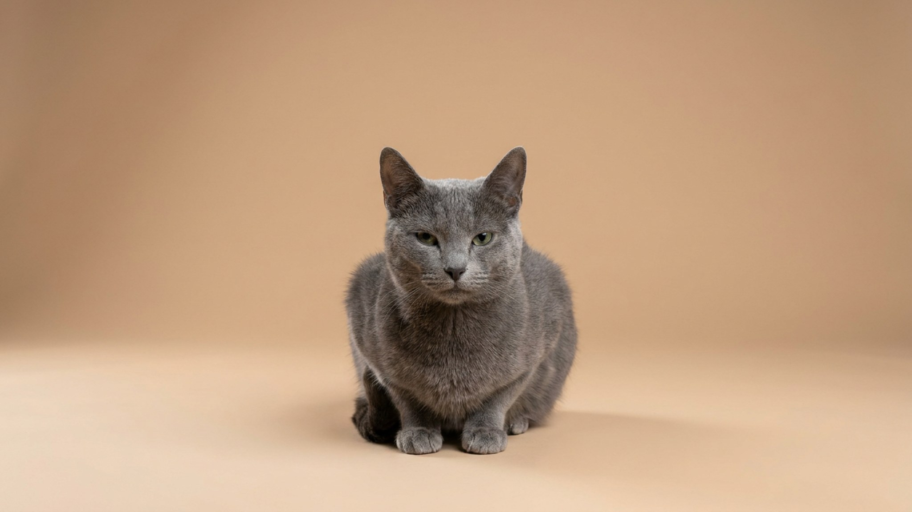

На выставке английский пойнтер замирает в стойке и кажется отлитой из бронзы статуей. Дома эта «статуя» способна за час разобрать квартиру, если её не вымотать как следует. Пойнтера веками выводили, чтобы он весь день искал дичь в поле, — и прогулка вокруг дома его не насыщает. Разберём характер, реальную норму нагрузки, уход и кому такая собака в радость, а кому — испытание.
🐾 У вас английский пойнтер?
AnimaLife соберёт уход под породу: к каким болезням есть склонность, что проверять по возрасту, чем кормить и когда пора к врачу. Бесплатно, прямо в мессенджере.
Собрать план ухода → Собрать в MAX →
У вас iPhone? AnimaLife есть в App Store
Пойнтер — легавая, выведенная в Англии для поиска птицы. Его коронный приём — стойка: учуяв дичь, собака замирает и «показывает» направление вытянутым телом. Это врождённый инстинкт, а не трюк. Понимать это важно: перед вами не декоративный компаньон, а рабочая машина с сильнейшим драйвом к поиску и движению. Инстинкт никуда не девается в городе — он просто ищет выход.
Пойнтер сочетает две вещи, которые удивляют новичков: неутомимость в поле и мягкость дома.
Это главный вопрос по породе. Пойнтеру мало «погулять» — ему нужно бегать и работать головой. Ориентир для взрослой собаки — час-полтора активного движения в день, а не только шаг на поводке: свободный бег на безопасной площадке, аппортировка, поиск по запаху, бег рядом с велосипедом. Без этого копится энергия, а с ней приходят разрушенная мебель, вой и «неуправляемость». Уставший физически и умственно пойнтер — спокойная, приятная собака.
Короткая гладкая шерсть неприхотлива: раз в неделю резиновой рукавицей — и порядок. А вот на что смотреть внимательнее:
Пойнтер создан для активных людей: бегунов, охотников, любителей долгих загородных вылазок и кинологического спорта. В семье с таким ритмом это преданный, ласковый и красивый друг. А вот тем, кто дома редко и гуляет по 15 минут, порода принесёт только взаимные страдания. У щенка смотрите на родителей и условия: важны рабочие линии, здоровье суставов и ранняя социализация — уравновешенный пойнтер вырастает у тех, кто дал ему движение и контакт с раннего возраста.
Материал носит информационный характер и не заменяет очную консультацию ветеринара.
🐾 Ваш питомец — английский пойнтер?
Заведите профиль в AnimaLife: приложение запомнит породу, возраст и вес и будет подсказывать по уходу именно для неё. Вопросы AI-ветеринару — круглосуточно и бесплатно.
Завести профиль → Завести в MAX →
У вас iPhone? AnimaLife есть в App Store
🐾 Понравился разбор?
Подпишитесь на канал — каждый день разбираем по одному тревожному симптому у кошек и собак: что в пределах нормы, а когда пора к врачу. Подпишитесь, чтобы не пропустить разбор, который может спасти здоровье вашего питомца.